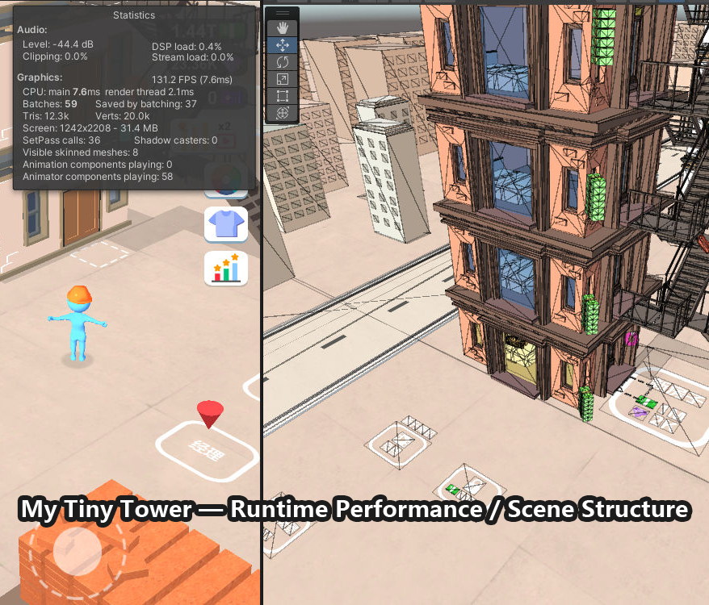

STYLIZED · IDLE / TYCOON · 长期运营
My Tiny Tower
独立项目美术负责人 / 3D Game Generalist
1000万+Google Play 下载
$0.33初测 CPI
32%–35%长期 D1 留存
114%巴西 D1 ROI

负责内容
长期独立承担主要美术生产与版本更新，覆盖建筑、场景、道具、角色相关资源、UV/贴图、材质、UI、基础动画与VFX适配、Unity场景整合及移动端资源控制。
视觉自主性
从玩法/文字需求开始整理参考，完成构图、配色、材质、UI及大部分具体视觉方案。最终版本与初版整体差异不大，主美终审主要集中在氛围和视觉问题修正。